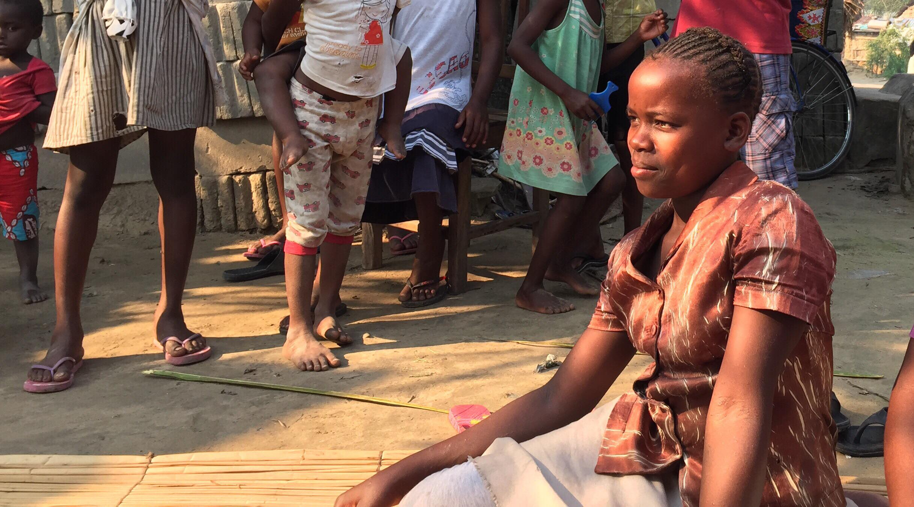

I met Fatima last summer on the dusty backroads of Quelimane, a small seaport in Mozambique. At a glance, she reminded me of my own sister back home - 16 years young, wide eyes, and a sharp curiosity on display as she rattled off a stream of questions. But Fatima told a startlingly different story from any teenager I had met.
"I started working on the streets when I was 13, to make money for my family. I couldn’t go to school anymore,” she confided. “Last year, I got tested and they told me I had HIV. My friends won’t talk to me anymore.”
In 2015, the United Nations set ambitious targets to end the HIV/AIDS epidemic globally by 2030, entrenched in the Sustainable Development Goals (SDGs). HIV or human immunodeficiency virus infects cells of the immune system, destroying or impairing their function and resulting in progressive deterioration of the immune system. HIV can be transmitted through unprotected sexual intercourse; transfusion of contaminated blood; the sharing of contaminated needles or other sharp instruments; and from mother-to-infant during pregnancy, childbirth and breastfeeding. When diagnosed, HIV-positive patients undergo antiretroviral therapy (ART) to slow the progression of HIV. At its late, most serious stage, HIV causes AIDS or acquired immune deficiency syndrome, leading to death over time. Where more than 35 million people have died from HIV globally, there is still no working vaccine or cure for HIV or AIDS. In Mozambique, the country with the 8th highest prevalence of HIV/AIDS, there were still 1,800,000 people (11.5% of the population) living with HIV in 2016, among whom only half were accessing ART.
Researchers, including those at Columbia's Mailman School of Public Health, have mapped the transmission of the virus through a systems framework to understand the causes and effects of HIV/AIDS. But as Fatima's story illustrates, HIV/AIDS is a complex disease, interlinking with factors like education, poverty, and access to quality health services. To prioritize and implement promising interventions and eradicate HIV/AIDS in Mozambique and globally, it takes seeing the big picture.
Systems thinking allows us to break down the interacting, interrelated, and interdependent parts of the circular world we live in, to identify the structures that drive patterned behaviour and events. By understanding and changing structures that are not serving us well, we can get to holistic, long-term solutions to chronic problems. Finding solutions to end HIV/AIDS are no different. Below, I explore the general topics (nodes) and relationships (edges) that can affect the prevalence of HIV and AIDS.
Click on the topics and relationships within the system to learn more:
Many topics contribute to and stem from the prevalence of HIV and AIDS, with clusters related to government; the economy; healthcare; medical R&D; water, sanitation, and hygiene; agriculture; societal norms; and infrastructure. These structures and patterns can be seen in Mozambique’s existing policy and program efforts to eradicate HIV/AIDS. For example:
Beyond existing HIV strategies and priorities which heavily focus on healthcare interventions, novel solutions targeted towards overlooked, marginalized populations can also be investigated within the system - ensuring that no one gets left behind. In Mozambique, one of the largest vulnerable groups are girls and young women like Fatima. They are three times more likely to be HIV-positive than boys and young men, and to get infected at an earlier age. Hearing directly from Fatima on her plight, her concerns, her wants and needs, gave a glimpse into the complexities that women and girls with HIV face. Using three topics Fatima alluded to in our conversation - sex work, stigma against HIV and sexual health, and economic security - I explore potential interventions within the causal loop diagrams below:
1. The case for banning child prostitution
Fatima is one of 13,553 sex workers living with HIV in Mozambique, a country where prostitution is prevalent - and legal. Sex workers are at high risk of early pregnancy and contracting HIV, and of being forced into human trafficking. These sex workers are often girls and young women. A 2001 study showed that 98% of child prostitutes were girls, 26% were aged 10-14 years, and only 14.1% attended school. A possible solution: the Mozambique government should ban child prostitution, giving girls like Fatima a chance at a healthy childhood free of communicable diseases, access to quality education, and the skills to be employed and empowered economically. Economic security and independence gives these girls a path out from poverty and the sex industry.
2. Community influencers reduce HIV and sexual health stigma
Arguably, the biggest barrier towards progress in eliminating HIV/AIDS is the societal stigma surrounding sex, sexuality, and sexual and reproductive health. For example, those who are HIV-positive often fear others knowing of their status, as like Fatima they can be shunned and gossiped about. In Mozambique, government and development actors should work with religious leaders ( 81.3% of the population identifies with a religion) and teachers to implement sexual education curricula in schools and churches. This facilitates open discussion by trusted community influencers on topics including HIV, increasing health-seeking behaviour like family planning and delivery of factual info so people can make informed, science-based decisions.
3. Women's economic inclusion in the agriculture sector
Mozambique is still predominantly a patriarchal society, where women participate less in the labour force than men, especially in mid- and high-income jobs. The agriculture sector supports about 80% of the economically active population and 87% of the female labour force in the country. Women’s economic participation in sustainable agriculture increases crop yields, and contributes to food security where more than 2 million or 43% of children under 5 are affected by chronic malnutrition. Nutrition and healthy diets are important for Fatima and other HIV-positive women and men in maintaining strength, energy, and a healthy immune system to prolong the latency of the virus.
To learn why and how I made this, take a look at this!